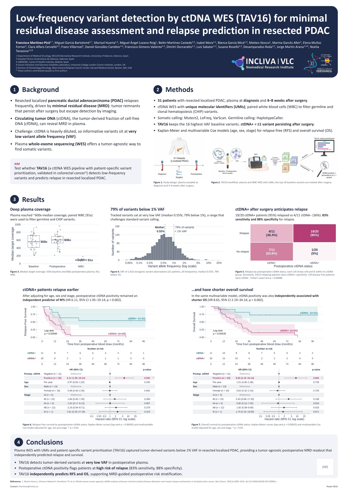

In a nutshell
Circulating tumor DNA (ctDNA) after surgery can reveal minimal residual disease (MRD), but tumor variants sit at very low variant allele frequencies. We applied TAV16, a plasma whole-exome sequencing pipeline with UMIs, paired white-blood-cell filtering and patient-specific variant prioritization, to 31 patients with resected localized pancreatic ductal adenocarcinoma.
- Tumor-derived variants detected at very low VAF (median 0.55%; 79% below 1%).
- Postoperative ctDNA positivity: 83% sensitivity and 88% specificity for relapse (19/20 ctDNA+ patients relapsed).
- Independent predictor of relapse-free survival (HR 6.11, p = 0.002) and overall survival (HR 8.65, p = 0.002).
Poster

Tap the image to open the full-resolution PDF and zoom in.